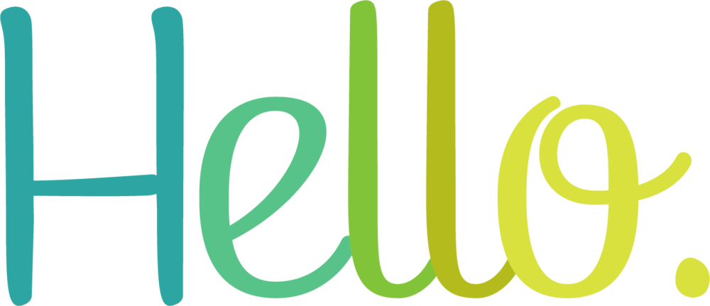

<div class="contenedor animate__animated animate__bounceInUp">

  <div class="mt-5" style="text-align: center">
    
  </div>

  <div class="row">
    <div class="col-12 col-lg-6 col-content">
      <div class="letras neon" >
        <p>Yazmín Brum</p>
        <p>-</p>
        <p>Lic. Comunicación</p>
      </div>

      <a class="btn btn-warning mt-3" routerLink="../about" style="border-radius: 18px;">
        <i class="fa fa-heart" aria-hidden="true"></i>
        ¡ Conóceme !
        <i class="fa fa-heart" aria-hidden="true"></i>
      </a>
    </div>

    <div class="col-12 col-lg-6 col-content">
      
    </div>

  </div>

  <div class="footer neon" style="text-align: center; color: #fff; font-size: larger;">
    "Tal vez me cortaron las alas, pero nunca dejaré de ser ave." (Gilraen, 2021).
  </div>

</div>
